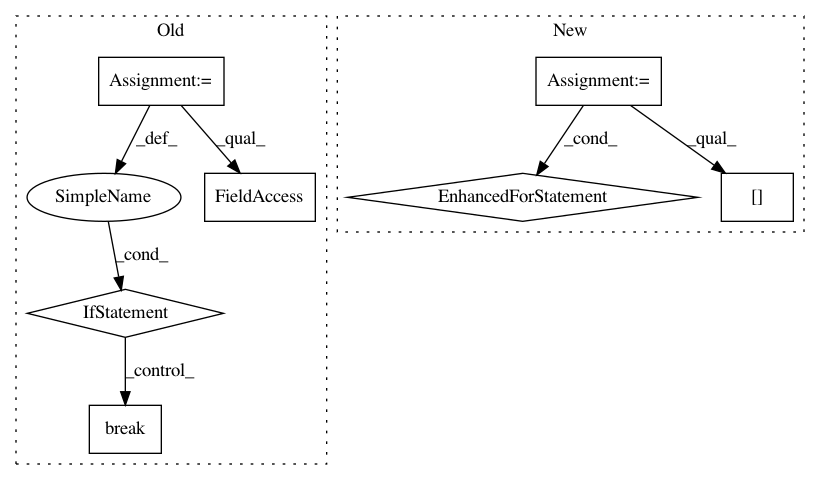

0efcba3479ba1899c660eaff69afe0c57418adb8,atlas/scripts/utils/tree.py,,root_tree_by_phyla,#,31
Before Change
Freq_pyla= phyla.value_counts()
for p in reversed(Freq_pyla.index):
LCA = T.get_common_ancestor(*tuple(phyla.index[phyla==p].values))
if not T== LCA:
T.set_outgroup(LCA)
print(f"set {p} as outgroup for Tree rooting")
break
T.unroot()
def layout_black_circles(node):
// If node is a leaf
After Change
Root the tree next to the phylum that is as far apart as possible from the other phyla
phylum_LCA={}
for p in phyla.unique():
phylum_LCA[p]=T.get_common_ancestor(*tuple(phyla.index[phyla==p].values))
Dist= pd.DataFrame()
for p1,lca1 in phylum_LCA.items():
for p2,lca2 in phylum_LCA.items():
Dist.loc[p1,p2]=T.get_distance(lca1,lca2)
furthest_phylum= Dist.mean().idxmax()
outgroup=phylum_LCA[furthest_phylum]
if not outgroup== LCA:
In pattern: SUPERPATTERN
Frequency: 3
Non-data size: 7
Instances
Project Name: metagenome-atlas/atlas
Commit Name: 0efcba3479ba1899c660eaff69afe0c57418adb8
Time: 2019-10-20
Author: silas.kieser@gmail.com
File Name: atlas/scripts/utils/tree.py
Class Name:
Method Name: root_tree_by_phyla
Project Name: tensorflow/models
Commit Name: fa15ed1eb316adff041904380930f39452a761f6
Time: 2021-01-20
Author: syazdani@google.com
File Name: research/object_detection/model_lib.py
Class Name:
Method Name: continuous_eval
Project Name: pgmpy/pgmpy
Commit Name: ca337ebba627326cd7b15b454053e31f51b5e441
Time: 2015-06-16
Author: ankurankan@gmail.com
File Name: pgmpy/inference/Sampling.py
Class Name: BayesianModelSampling
Method Name: rejection_sample